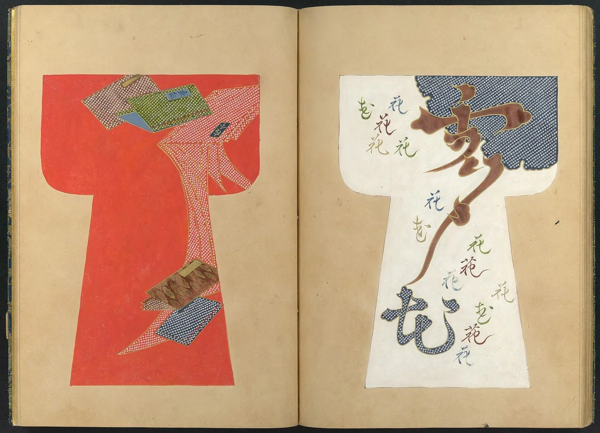

to wear
a thing
The word is plain Japanese.[4] p.10
The same robe, kept in view through the deck. Photograph: The Metropolitan Museum of Art, CC0; background removed.
36–38cm
wide
12m
long, about
In the old units: 9 sun 5 bu to 9 sun 8 bu wide, 3 jō or more long.[7] p.80
1636
A shogunal law fixed the bolt’s length and width.[39] p.435
No pattern is drafted. The cut only divides the bolt.[7] p.80
Sleeves and body panels first; the rest is split for the okumi and the collar.[7] pp.79–80
“A completely flat surface.”
No tucks, no darts.[4] p.10
Schematic. Piece lengths are approximate and vary with the wearer; the flat T is shown from the front, opened out.
Eri · collar
A neckband sewn around the front opening.[4] p.10
Okumi
An extra panel on each front, 15 cm wide as standard.[7] p.76[8] p.49
Yuki · spine to cuff
159.6
cm of body length (mitake) for a woman 160 cm tall.[7] p.76
Unpick it, and it is cloth again. Silk was taken apart to wash, and robes were remade.[7] pp.75–76
Awaselined
Hitoeunlined
Ro · shasheer
The move to sheer cloth usually comes in the humid days of August.[6] p.20
Sakidori: wear the flower about a month before it blooms. A past season’s motif is a faux pas.[4] p.62[6] p.27
Druet’s account of present-day practice, which she calls “a guiding principle, not mandatory but strongly encouraged” [6] p.22.
The design tells formality and season, and the wearer’s age and standing.[4] p.11
992
kosode read in 39 genre paintings. In the Kanbun style of the 1660s: big, dynamic motifs and a large empty area on the back.[10] p.592

Right: the same Met robe, enlarged. Below left, at the last beat: The Met, 42669, CC0.
Stage
123456/ 6
16
items in one professional furisode dressing,
3kg
about 3.75 times a sweater and jeans.[20] p.22
Schematic figure. The order follows furisode magazines as Becke reads them; one case study counted the items and weighed them.
The other way round “is now associated with death and the afterlife.”[4] p.70
8.6%
of 128 women students could put on a kimono by themselves in 2006; 35.9% a yukata.[27] p.774
Nape
Collar set back 3 to 5 cm, best fit in one 1976 study.[22] p.530
Obi
Women’s sit from under the bust to the waist; men’s lower.[20] p.23
Hem
Level, just above the feet; it gave longer strides.[4] p.70[23] p.695
“Constant monitoring and correcting of one’s body.”[4] p.80
Schematic figure. Measures come from small laboratory studies of three to nine women.
Long sleeves for the unmarried. The furisode is “mainly reserved for unmarried women” at formal occasions.[4] p.53
Men have a ladder too. By mid-Edo a black crested haori was the most formal; plain, then komon, then stripes.[37] P-386
The usual order, as a 2022 study of the trade gives it [25] p.16. Tsumugi, ranked there between komon and yukata, is left out: no source here defines it. Silhouettes are schematic.
132
times the shogunate issued clothing rules, 1615 to 1866.[39] p.432
Rank by material, early shogunate
Silk › pongee › cotton › hemp[39] p.438
So merchants hid colour and embroidery inside their haori.[4] pp.99–100
1930
Meisen output peaked. A plain-weave silk of pre-dyed yarn, it was the mass-market kimono from Taishō into post-war Shōwa.[14] pp.1, 3[15] p.37
Kimono market, billion yen
⅐of 1981
[25] p.11After the 1990s, kimono went from owned to rented: Kyoto had about forty rental shops in 2021.[4] p.118[12] p.72
“The rectangular cut that followed the warp and weft … and the unconfined garment that resulted.”[5] p.8
Schematic map, not to scale. Dates are first appearances named in the sources.
Japan: the Met kosode, ca. 1660s.
China: hanfu, schematic.
Its front, too, closes left over right.[40] p.44
Every Asian garment in one comparison uses the full cloth width, cut with no waste.[41] p.16
The front is cloth: one bolt, eight rectangles.
The back is the rules: how, when and by whom it is worn.
The Met robe’s back is not photographed; it is shown here as a greyed mirror of the front.
How this was made
Narration: synthetic voice (Venice AI).
Sources and credits
The full exhibition, with all 245 sourced statements, is at /read/.
Real photographs and hand-built 3D; nothing generated. Narration: synthetic voice (Venice AI).